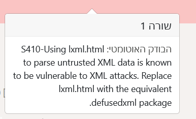

היי,
השתמשתי במודול lxml.html.
קיבלתי במערכת התרגילים את ההערה הבאה, אך גם לאחר חיפוש בגוגל לא הבנתי איך עליי לתקן אותה, אשמח להסבר.
תודה!

לא נתקלתי עד היום במודול/בהערה, אבל נשמע שממליצים לך להשתמש במודול אחר (ואפילו ציינו איזה במפורש) במקום זה שהשתמשת בו, מסיבות של אבטחת מידע 
נכון, הבנתי שמבקשים להשתמש במודול אחר, אך לא הבנתי מגוגל איזה .
defusedxml package לפי הבנתי לא מראה מהו המודול האקוויולנטי לזה שהשתמשתי בו.
לא ממש הבנתי את מה שאת אומרת כאן. לפי ההערה defusedxml הוא המודול האקוויולנטי, האם ניסית להשתמש בו?
לפי גוגל נראה ש defusedxml package הוא חבילה של מודולים ולא מודול בעצמו, אך לא מצאתי אחרי חיפוש רב איך משתמשים בחבילה הזו, ולכן ההערה של הבודק האוטומטי לא ברורה לי
הסתדרתי לבסוף ללא שימוש במודול אחר. תודה רבה על העזרה!
לייק 1
היי עדי גם אני נתקעתי עם אותה הבעיה בשימוש בlxml ולא הצלחתי להשתמש בdefusedxml במקום, יש מצב להכוונה למה עשית?
היי,
פתחתי את אחד מקבצי הhtml כקובץ txt , ראיתי מה מאפיין חוזר של הכותרת בקובץ הtxt וביצעתי לפי זה חיפוש לכותרת (ללא שימוש במודול שיעשה את זה במקום מודול הlxml)
אה… ידעתי שאפשר לעשות את זה כטקסט אבל קיוויתי להצליח לשמור על ההתחכמות בשימוש במודול הזה. 
כנראה שאין ברירה
אתה לא חייב מודול לזה מה שעשית בהחלט תקין.
חייבת תודה!..
חחח סורי לפעמים אני על דיפולט
לייק 1
כמו שגדולים מאיתנו אמרו - חפשו את הפשטות.
“הדברים הפשוטים ביותר בחיים הם המיוחדים ביותר; רק אנשים חכמים מסוגלים להבין אותם.” (מתוך האלכימאי)
“פשטות היא הסיבוך האולטימטיבי.” (ליאונרדו דה וינצ’י)
4 לייקים
באתי בגישה שאני יותר אוהב לקרוא קובץ HTML כקובץ HTML בידיעה מלכתחילה שיכולתי לעבוד עליו כטקסט ודווקא יצא ממש יפה וקצר והייתי מבסוט על הפתרון  לא נורא
לא נורא
הזן של פייתון אומר את זה גם 
Simple is better than complex. Complex is better than complicated.
3 לייקים
יש משהו שאין בזן של פייתון?
לייק 1
חוץ ממדריך להכנת הצ’יפס המושלם אני חושבת שיש שם הכול 
5 לייקים
רעיון !
2 לייקים